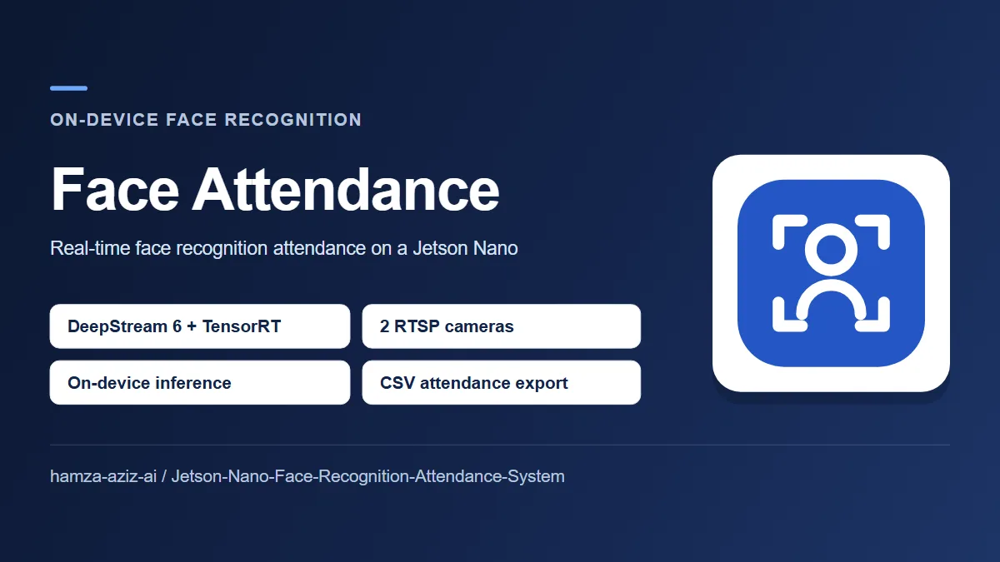

Face recognition attendance on a Jetson: from one Nano to eight cameras on an Orin Nano

The problem
A site wants to know who came in and when. The usual answer sends every frame to a server or a cloud API, so a face leaves the building, a network outage means no attendance, and the per-camera bill never stops. I took the opposite constraint: camera in, verified attendance out, on one board, with nothing leaving the device. That is a privacy position before it is an engineering one, and it is what makes the rest hard.
The first board was a Jetson Nano 4 GB. Its 4 GB is shared between CPU and GPU, it has no DLA, so every inference costs the one GPU that also draws the live view and encodes video, and JetPack 4.6 freezes the toolchain at DeepStream 6.0.1, TensorRT 8.2, CUDA 10.2 and Python 3.6. You build for what the board has, not for what you would choose.
The system
One C++ DeepStream pipeline takes RTSP, USB or CSI cameras and uploaded video. SCRFD-10G detects faces and ArcFace (w600k_r50) embeds them, both as TensorRT FP16 engines, with five-point alignment and tracking, and each visit is written to a dated attendance log with a face snapshot and an event clip. A website on the board shows the live view, the log and the system’s health, behind admin and viewer accounts. The code, the decision log and every measurement below are in the public repository, and a replica of the real pages runs as a live demo.
Detection you can afford: an adaptive probe
The first pipeline ran detection through DeepStream’s nvinfer at a fixed interval and sat at 12.2 fps with the GPU at 89–99% even in an empty room, burning the whole board to watch an empty doorway. Changing nvinfer’s interval as the scene changes is impossible, because that property can only be set while the pipeline is stopped. I rejected a split pipeline reunited by timestamp and two nvinfer instances at different intervals, which doubles the memory for the same engine.
Instead SCRFD runs inside a GStreamer buffer probe that decides per frame whether to detect: full rate while faces are present, every sixth processed frame after ten seconds with none, and back to full rate on the first face. On a 30 fps 1080p camera with every second frame processed, the board now runs at 15.0 fps end to end with the GPU near 0% between detections, and the output was checked against nvinfer on the same frames: same box, embedding cosine 1.0000. The failure that shaped it: a probe that does its own inference must set bInferDone on the frames it ran, or the tracker silently drops every face it was given.
Two cameras in one process, because two processes lost
The plan gave a second camera its own process for clean isolation. Measured first, a second pipeline used 3.35–3.45 GB of the board’s 3.96 GB and cut the live camera from 14.6 to 8.8 fps, so the plan failed its own capacity test. The design that shipped is one process with shared SCRFD and ArcFace engines, one source per camera into a single batched muxer, and a detection budget in which two cameras that are both due take turns. Result: 14.4 fps per camera in 2.3 GB. Uploaded video runs as a second pipeline in the same process, admitted only while the live cameras are idle; a 9-second clip processes in 18 seconds while the live camera holds 15 fps. Every recognition job carries a camera, a generation and a track ID, so a result still in flight can never land on the next person.
A website with no dependencies, shipped as machine code
Python 3.6 and 4 GB ruled out Django and Flask, so the website is built on the standard library’s http.server: nothing to install and nothing to rot on a frozen JetPack. For a client device the source should not be readable either. Shipping .pyc files is not protection, since a decompiler returns near-original source in seconds, and an obfuscator only makes every traceback worse. Every deploy compiles the website with Nuitka into a 2.4 MB native module, so with the pipeline already a C++ binary, the board carries no readable product source. The cost is about six minutes of compile per deploy.
Releases that install themselves, and a board that must stay updatable
A device nobody logs into has to update itself. A timer checks for a newer release every ten minutes, installs it, health-checks it and rolls back automatically on failure; a failed release is never retried and the version never goes backwards. Then a board ran with its camera unplugged. Recognition died a few seconds into every start and was restarted hundreds of times an hour, and because the health check waited for camera frames, that board rolled back every release and could never be updated again. Now the pipeline waits for its camera and says on every page which one it is waiting for, and a waiting board counts as healthy, so updates keep flowing. Two reasonable designs met one reasonable failure, and only running it found that.
On the internet without opening a port
Remote access runs through a Cloudflare Tunnel: the board makes an outbound connection, so no router port is opened and the device has no inbound surface, and the website’s own sign-in remains the lock. When the board cannot answer, Cloudflare serves a maintenance page instead of a browser error. The public demo is captured from the running website, with one recorded day and drawn faces, and served at the edge, so it stays up when the board is off. Its first build captured the System page from the laptop that built it, so a page headed “Jetson Nano” reported 20 CPU cores and 15.5 GB of RAM: a demo captured from a real server inherits whatever that server reads about its own machine.
Faces are not kept for ever
An unidentified face used to be a new “unknown” every time, so “how many different people came in today?” had no answer. A stranger now keeps a number for 30 days, so a day’s different faces can be counted, each name and each stranger once. The matching rule is retention: a face snapshot is deleted after 30 days while the attendance record stays, with a placeholder where the picture was. The record is the fact; the picture is only evidence, and nothing may write faces without a retention period.
Running warm, and measuring it
Over 31 minutes on an empty scene the Nano levelled off at 55.2 °C on its always-on sensor and 48.3 °C on the CPU; with the case fan fitted, the always-on sensor stayed at 50.0–51.5 °C and the fan ran about 4 of the 31 minutes, at 14.6–15.2 fps throughout and with no throttling. With faces present and detection on every frame the CPU sits near 81 °C against a 97 °C throttle point. A single 80 °C warning therefore lit the health panel through normal work, so each sensor is now judged against its own slow-down and shutdown limits, and the warning says which reading is wrong and what to do. A warning that is always on is not a warning.
The Orin Nano: rebuilt, not ported
The second system, the Edge Vision Attendance Platform, targets a Jetson Orin Nano Super 8 GB on JetPack 7.2.1, DeepStream 9.2, TensorRT 10 and Python 3.12. Nearly every constraint changed, so the Nano repository stays the JetPack 4 product and the Orin system is a new one with its own CI and release line. The Nano design is shaped by 4 GB and one camera; this one is shaped by eight cameras and a GPU with headroom. Face alignment moved onto the GPU as CUDA kernels working straight from the frame, with the detector’s own five landmarks carried through the tracker; NvDCF replaced the IOU tracker, with one decision per visit; and a SQLite store replaced the append-only log, because at eight cameras an API would otherwise rescan files on every request. TensorRT 10 refused the stock SCRFD model, whose input dimensions are all unnamed, until a build step fixed its shapes before the engines are built on the device.
Measured on the board with the attendance store, the console and a dashboard polled every second all running, on 720p H.264 RTSP at 30 fps with a face in every frame, which is the worst case for recognition:
- 8 cameras, detection every 5th frame: lowest camera 30.1 fps, 5.0 GB board RAM, peak GPU 76%.
- 12 cameras: 22.3 fps, enough for cameras set to 20 fps.
- At 1080p, two cameras at 29.9 fps each. The total flattens at about 75 fps however the streams are split while the GPU sits at 51–58%, so the limit is the decode path, not compute.
- SCRFD-10G 3.47 ms per frame and ArcFace 1.69 ms per face at batch 8, FP16.
- Embeddings agree with the InsightFace reference implementation at cosine 0.990–0.999 on the same photos. That is a parity check, not a benchmark score.
A live demo of the Orin console runs at the edge; its repository is private.
What broke on the Orin, and none of it was our code
DeepStream 9.2 hung on the Orin Nano from four cameras up, and each cause was reproduced with NVIDIA’s own elements in gst-launch-1.0. The default NvDCF config uses the VPI tracker backend and the Orin Nano has no PVA, so it stalls; the tracker running on the muxer’s thread deadlocked paced runs until a queue went in front of it; eight cameras ran out of decoder surfaces until each source got extra; and the new muxer waits for its slowest camera, so one offline camera held every other camera at about 4 fps until its minimum rate was raised with adaptive batching. A warm reboot once left the GPU reporting no CUDA device at all, and only a cold power cycle brought it back. That is the texture of edge work.
What this demonstrates
Measuring before committing: the two-process plan, the 80 °C warning and the published camera count each changed because a measurement on the board disagreed with the plan. And a progression on real hardware, from one camera at 15 fps on a 4 GB Nano to eight cameras at 30 fps on an Orin Nano, with every number taken while the rest of the system was running.
The same DeepStream pipeline also serves as the high-density tier of my CCTV face recognition attendance platform.
Other case studies
CCTV face recognition attendance across 20+ streams · Computer vision attendance with a PTZ camera · Production voice AI for drive-thru ordering
Full CV · Download UAE CV (PDF) · Discuss an AI engineering opportunity